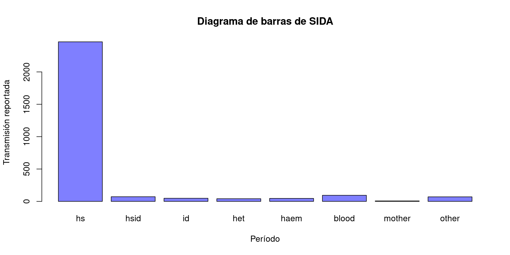
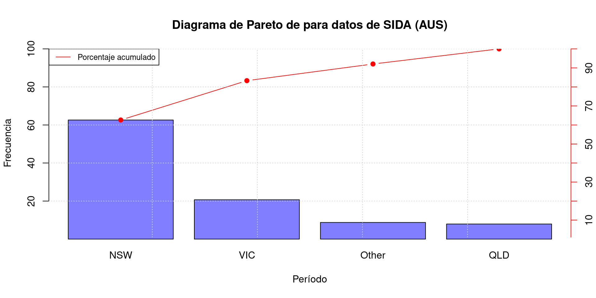
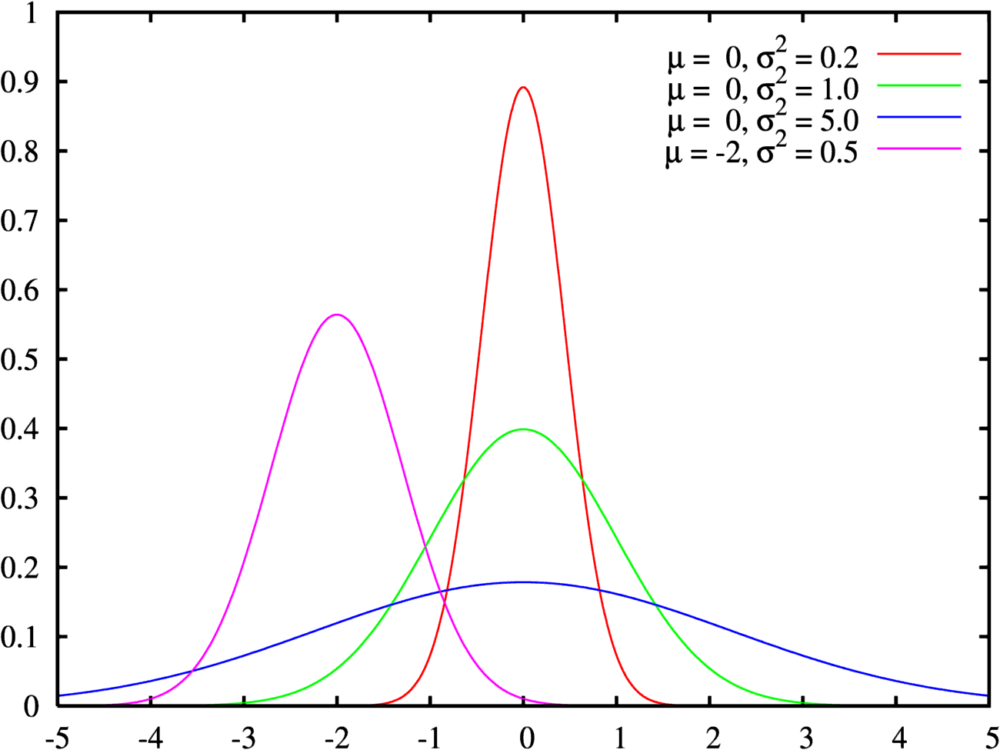

[1] 14 13 17 22 19 26 25 20 24 27 24 20 20 19 21 23 23 22 16 15 21 16 22 19 29
[26] 13 19 20 29 20 23 26 23 25 35 20 28 17 24 15 22 23 25Estadística Descriptiva Univarada
Andreina Alamo
Presentación tabular de una variable
La presentación de un conjunto de datos suele hacerse indicando las frecuencias de aparición de la variable. La frecuencia absoluta de un suceso A es el número de veces que se observa A, la frecuencia relativa se define por:
\[fr(A) = \frac{\text{No. de veces que se observa A}}{\text{No. total de datos}}\] Para una interpretación más sencilla también se puede multiplicar por 100.
Tabla o distribución de frecuencias
Variables cualitativas
En el caso de una variable cualitativa, se indican sus clases y sus frecuencias. Cuando no es de escala ordinal se suele ordenar de mayor a menor frecuencia.
| Nivel educativo | F. Absoluta | F. Relativa |
|---|---|---|
| Bachillerato | 33 | 0.66 |
| Pregrado | 7 | 0.14 |
| Maestría | 8 | ? |
| Doctorado | 2 | ? |
| Total | 50 | 100% |
Se obtiene la siguiente table. Note que las frecuencias fueron multiplacadas para interpretar los resultados en términos de porcentajes.
| Nivel educativo | F. Absoluta | F. Relativa |
|---|---|---|
| Bachillerato | 33 | 66% |
| Pregrado | 7 | 14% |
| Maestría | 8 | 16% |
| Doctorado | 2 | 4% |
| Total | 50 | 100% |
Si se tuvieran muchas clases se pueden agrupar.
Ahora, adicional a esta información tenemos la frecuencia absoluta acumulativa, la cual se calcula de la siguiente manera:
| Categoría | F. Absoluta acumulada |
|---|---|
| \(k_1\) | \(N_1 = n_1\) |
| \(k_2\) | \(N_2 = n_1 + n_2\) |
| \(\vdots\) | \(\vdots\) |
| \(k_p\) | \(N_p = n_1+ n_2 + \dots + n_p\) |
Donde p es el número de clases.
Finalmente tenemos la frecuencia relativa acumulativa
| Categoría | F. Relativa acumulada |
|---|---|
| \(k_1\) | \(Fr_1 = fr_1\) |
| \(k_2\) | \(Fr_2 = fr_1 + fr_2\) |
| \(\vdots\) | \(\vdots\) |
| \(k_p\) | \(Fr_p = fr_1+ fr_2 + \dots + fr_p\) |
Las frecuencias acumuladas cobran sentido con una variable cualitativa ordinal
Ejemplo 1
| Nivel educativo | F. Absoluta | F. Relativa | F. Abs.Acum. | F. Rel.Acum. |
|---|---|---|---|---|
| Bachillerato | 33 | 66% | 33 | 66% |
| Pregrado | 7 | 14% | 40 | 80% |
| Maestría | 8 | 16% | ? | ? |
| Doctorado | 2 | 4% | ? | ? |
| Total | 50 | 100% |
Ejemplo 1
| Nivel educativo | F. Absoluta | F. Relativa | F. Abs.Acum. | F. Rel.Acum. |
|---|---|---|---|---|
| Bachillerato | 33 | 66% | 33 | 66% |
| Pregrado | 7 | 14% | 40 | 80% |
| Maestría | 8 | 16% | 48 | 96% |
| Doctorado | 2 | 4% | 50 | 100% |
| Total | 50 | 100% |
Variables cuantitativas
Para el caso de variables cuantitativas discretas con pocas clases, las tablas se realizan de la misma forma. Ahora, si la variable tiene muchos valores distintos o si es continua se recomienda agrupar las clases siguiendo los siguientes pasos:
Pasos para construir clases
Determina el Tamaño de la Muestra ( n ): Número total de observaciones en el conjunto de datos.
Determina el número de clases: Hay varios criterios y la elección queda principalmente a criterio del investigador. Se puede utilizar una particicón intuiutiva o \(k = \sqrt{n}\), pero en el curso se recomendará usar la regla de Sturges como sigue: . . . \[ k = 1 + \text{log}_2(n) = 1 + \frac{\text{log}_{10}(n)}{\text{log}_{10}(2)} = 1 + 3.32\times\text{log}_{10}(n)\] Este se redondea al siguiente entero.
Establece el Ancho de Clase ( w ): Divida el rango (máximo - mínimo) de sus datos por el número de clases ( k ) para determinar el ancho de clase. La fórmula es (\(w = \frac{\text{Rango}}{k}\)). En caso de una variable discreta se redondea al siguiente entero.
Construye las Clases: Utiliza el ancho de clase ( w ) para crear intervalos o clases que cubran todo el rango de los datos. Cada observación debe corresponder a una clase.
Ejemplo 2
Tenemos los siguientes datos sobre el tiempo en minutos al realizar una operación.
Calculamos el número de clases a partir de la regla de sturges.
\[ k = 1 + 3.32\times\text{log}_{10}(43) = 6.42 \approx 7\] EL ancho de la clase quedará de \(w = \frac{(35-13)}{7}=\frac{22}{7}=3.14\approx 4\)
Obtenemos:
| Intervalo | F. Absoluta | F. Relativa | F. Abs.Acum. | F. Rel.Acum. |
|---|---|---|---|---|
| 13-16 | 7 | 16.3% | 7 | 16.3% |
| 17-20 | 12 | 27.9% | 19 | 44.2% |
| 21-24 | 14 | 32.6% | 33 | 76.8% |
| 25-28 | 7 | 16.3% | 40 | 93.1% |
| 29-32 | 2 | 4.6% | 42 | 97.7% |
| 33-35 | 1 | 2.3% | 43 | 100.0% |
| Total | 43 | 100.0% |
Variable continua
En este caso las clases se representan como intervalos cerrados a izquierda y abiertos a derecha. Por ejemplo en el caso del tiempo. \([20-25),[25-30),[30-35)\),…
En este caso no se redondea el ancho de la clase.
Representación semi-gráfica
Diagrama de tallo y hojas
- Descripción: Procedimiento para variables cuantitativas. Consiste en dividir cada número en su parte de tallo (los dígitos principales) y su parte de hojas (el dígito final).
- Pros: Permite visualizar la frecuencia de los datos de forma más amigable, así como identificar posibles sesgos y simetrías.
- Contras: No es buena opción cuando hay muchas hojas.
Pasos
Redondear los datos a dos o tres cifras significativas, expresándolos en unidades convenientes.
Disponerlos en una tabla con dos columnas separadas por una línea como sigue: . . . 2.1. Para datos con dos dígitos, escribir a la izquierda de la línea los dígitos de las decenas —que forma el tallo— y a la derecha las unidades, que serán las hojas. Por ejemplo, 87 se escribe 8|7. . . . 2.2. Para datos con tres dígitos el tallo estará formado por los dígitos de las centenas y decenas, que se escribirán a la izquierda, separados de las unidades. Por ejemplo, 127 será 12|7.
Cada tallo define una clase, y se escribe sólo una vez. El número de «hojas» representa la frecuencia de dicha clase.
Ejemplo 3
Datos recogidos en cm: 11,357; 12,542; 11,384; 12,431; 14,212; 15,213; 13,300; 11,300; 17,206; 12,710; 13,455; 16,143; 12,162; 12,721; 13,420; 14,698.
Datos redondeados expresados en mm: 114; 125; 114; 124; 142; 152; 133; 113; 172; 127; 135; 161; 122; 127; 134; 147.
Diagrama de tallo y hojas, datos en mm: . . .
Representación gráfica
Histograma
- Descripción: El histograma es un gráfico de barras que muestra la distribución de los valores de una variable continua en intervalos llamados clases. La altura de las barras está dada por las fecuencia.
- Interpretación: Permite visualizar la forma y la dispersión de los datos, así como identificar posibles sesgos, simetrías y patrones de distribución.
- Pros: Es útil para comprender la distribución de los datos y detectar la presencia de valores atípicos.
- Contras: La interpretación puede variar dependiendo de cómo se elijan los intervalos de clase.
Ejemplo 4
Datos sobre epilepsia
Diagrama de barras
- Descripción: El diagrama de barras es un gráfico que representa la frecuencia de las categorías de una variable categórica mediante barras rectangulares.
- Interpretación: Permite comparar la frecuencia de cada categoría y visualizar fácilmente las diferencias entre ellas.
- Pros: Es efectivo para comparaciones visuales y fácil de entender para una amplia audiencia.
- Contras: No es adecuado para variables continuas o para representar relaciones numéricas precisas.
Ejemplo 5
Datos sobre SIDA en Australia
Gráfico de torta
Descripción: El gráfico de torta muestran las frecuencias relativas de cada categoría en una variable categórica mediante sectores circulares. El ángulo correspondiente a cada categoría se cálcula como \(f_i \times 360°\)
Interpretación: Facilita la visualización de la distribución relativa de las categorías y destaca las proporciones relativas.
Pros: Es intuitivo y fácil de interpretar para mostrar proporciones.
Contras: Puede resultar difícil comparar las proporciones exactas de las categorías y no es adecuado para representar muchos niveles o categorías.
Ejemplo 5
Datos sobre SIDA en Australia
Gráfico de línea
- Descripción: El gráfico de línea muestra la relación entre dos variables continuas a través de puntos conectados por líneas.
- Interpretación: Permite visualizar tendencias, cambios y patrones en los datos a lo largo del tiempo u otro factor.
- Pros: Es útil para identificar tendencias, estacionalidades y cambios a lo largo del tiempo.
- Contras: Puede resultar complicado interpretar si hay muchos puntos o si la relación es compleja.
Ejemplo 4
Gráfico de Pareto
- Descripción: El gráfico de Pareto es un gráfico de barras que ordena las categorías por su frecuencia de mayor a menor. Se construye ordenando la frecuencia relativa de los datos y cada categoría se representa por un rectángulo cuya altura es dicha frecuencua.
- Interpretación: Permite identificar las categorías más importantes o significativas en función de su frecuencia relativa.
- Pros: Destaca las categorías más relevantes.
- Contras: Es mejor con variables cualitativas.
Ejemplo 5
Datos sobre SIDA en Australia
Medidas descriptivas
Las variables cuantitativas se pueden resumir con varios tipos de medidas, que permiten caracterizar su comportamiento bien sea en la muestra o en la población observada:
- Tendencia central.
- Localización.
- Dispersión o variabilidad.
- Forma.
Dado que en general no se acostumbra a medir toda la población (censo), generalmente las mediciones se hacen sobre una muestra, por lo que las medidas que se presentan a continuación se denominan “muestrales”.
Medidas de tendencia central
Existen diferentes medidas de tendencia central. Las más utilizadas son la media aritmética (promedio), la mediana, y la moda.
Como su nombre lo indica, el propósito consiste en proporcionar un valor que describa adecuadamente el “centro” de los datos.
Media aritmética
La media es el centro de gravedad de los datos y se calcula como la suma de todos los valores dividida por el número de observaciones, como sigue a continuación.
\[\bar{x}=\frac{\sum^n_{i=1} x_i}{n} = \frac{x_1 + x_2 + \dots + x_n}{n}\]
El símbolo \(\sum\) denota sumatoria de varios elementos según se indique en los índices.
Características de la media
- Otorga a todas las observaciones la misma importancia relativa, \(\frac{1}{n}\).
- Corresponde al centro de gravedad de los datos, es decir, \(\sum^n_{i=1} (x_i− \bar{x})=0\)
- Es sensible a datos atípicos.
- No es una buena representación del centro de los datos cuando su distribución es marcadamente asimétrica (sesgada).
Media para datos agrupados
Marca de clase: Es el punto medio de cada intervalo y se calcula como: \(y_j=\frac{l_{j-1}+l_{j}}{2}\)
| Intervalo | F. Absoluta | F. Relativa | Marca de clase |
|---|---|---|---|
| \(l_0-l_1\) | \(n_1\) | \(fr_1\) | \(y_1\) |
| \(l_2-l_3\) | \(n_2\) | \(fr_2\) | \(y_2\) |
| \(\vdots\) | \(\vdots\) | \(\vdots\) | \(\vdots\) |
| \(l_{p-1}-l_p\) | \(n_p\) | \(fr_p\) | \(y_p\) |
La media se calcula como:
\(\bar{y} \approx \frac{1}{n} \sum_{i=1}^p n_i y_i =\sum_{i=1}^pfr_iy_i\)
Media aritmética ponderada
La media aritmética otorga igual peso a cada observación: \(\frac{1}{n}\). Sin embargo, en algunas ocasiones la importancia relativa de los datos no es la misma, por lo que los datos son ponderados de tal forma que esta importancia se ve reflejada en las medidas estadísticas correspondientes.
La media aritmética ponderada es un promedio que tiene en cuenta la importancia relativa de cada uno de los datos, la cual se calcula como: \(M(x) = \frac{\sum_{i=1}^n w_i x_i}{\sum_{i=1}^n w_i}\) donde \(w_i\) es la ponderación y \(x_i\) es el dato, la clase o la marca de clase correspondiente.
Entre los ejemplos más conocidos tenemos nuestro Promedio Aritmético Ponderado Acumulado - PAPA.
Mediana
La mediana o percentil 50 del conjunto de datos, corresponde al valor que acumula el 50% de los datos, la cual se calcula como:
\(P_{50}(x)= Me(x)= \left\{ \begin{array}{lcc} x_{\left(\frac{n+1}{2}\right)} & si & \text{n es impar}\\ \\ \frac{x_{\left(\frac{n}{2}\right)} + x_{\left(\frac{n}{2}+1\right)} }{2} & si & \text{n es par} \end{array} \right.\)
donde \(x_{(i)}\) es la observación que ocupa la i-ésima posición del conjunto de datos ordenado ascendentemente.
Características de la mediana
- Se calcula para variables medidas en al menos una escala ordinal.
- No se basa en la magnitud de los datos.
- Es robusta (no se ve afectada) a datos atípicos.
- Se recomienda su uso cuando la distribución de los datos es considerablemente asímetrica (sesgada).
- La media y la mediana coinciden cuando la distribución de los datos es simétrica.
- No tiene propiedades aritméticas directas y sencillas de aplicar como la media aritmética.
Mediana en datos agrupados
Dada una tabla de frecuencias:
Definimos el índice del primer intervalo cuya frecuencia relativa es mayor o igual a 50% que denotaremos \(k\) y el ancho del intervalo que denotamos \(w\).
Calculamos la mediana mediante la siguiente expresión: . . . \[P_{50} = l_{k-1}+w \left( \frac{0.5n-N_{k-1}}{n_k}\right)\]
Ejemplo 6
Tenemos los siguientes datos:
[1] -2.38 0.78 -0.69 -1.10 1.96 -0.47 1.62 -1.49 -0.52Su media y su mediana son:
Moda
Esta medida se usa en las variables cualitativas o cuantitativas discretas e indica el valor más frecuente. Se puede ver fácilmente con la frecuencia absoluta cuando los datos no están agrupados.
Para datos agrupados se calcula como sigue:
\[M_d(x) = l_{k-1} + w\left( \frac{n_k-n_{k-1}}{2n_k-n_{k-1}-n_{k+1}}\right)\] Donde k es el intervalo de mayor frecuencia absoluta Por ejemplo, para nuestro ejemplo de estudiantes de diferentes programas la moda era bachillerato.
Ejemplo 7
Tenemos los siguientes datos
[1] "Panamá" "Panamá" "Colombia" "Colombia" "Panamá" "Panamá" "Colombia"
[8] "Panamá" "Panamá" Ejemplo 8 datos agrupados
Se tienen los siguientes datos y se obtiene por Sturges k=6:
[1] 8.14 -2.04 8.04 10.62 9.32 4.21 9.97 1.35 5.40 0.93 5.34 8.40
[13] -1.30 6.52 3.94 8.18 7.88 7.15 4.60 2.45 4.41 3.25 -0.28 5.81
[25] 6.10| Intervalo | F. Absoluta | F. Relativa | F. Abs. Acum. | F. Rel.Acum. | Marca de clase |
|---|---|---|---|---|---|
| [-2.04,0.07) | 3 | 12% | 3 | 12% | -1.055 |
| [ 0.07,2.18) | 2 | 8% | 5 | 20% | 1.125 |
| [ 2.18,4.29) | 4 | 16% | 9 | 36% | 3.235 |
| [ 4.29,6.40) | 6 | 24% | 15 | 60% | 5.345 |
| [ 6.40,8.51) | 7 | 28% | 22 | 88% | 7.455 |
| [ 8.51,10.62] | 3 | 12% | 25 | 100% | 9.565 |
| Total | 25 | 100% |
La media es:
\[ \begin{aligned} \bar{y} \approx \sum_{i=1}^p f_i y_i &= 0.12 \times -1.055 + 0.08 \times 1.125 + 0.16 \times 3.235 +\\ & 0.24 \times 5.345 + 0.28 \times 7.455+ 0.12 \times 9.565 = 4.99 \end{aligned} \] La mediana es:
\[\begin{aligned} P_{50} &= l_{k-1}+w \left( \frac{0.5n-N_{k-1}}{n_k}\right)\\&=4.29+2.11 \left(\frac{0.5(25)-9}{6} \right)= 5.52 \end{aligned}\]
La moda es:
\[\begin{aligned} M_d(x) &= l_{k-1} + w\left( \frac{n_k-n_{k-1}}{2n_k-n_{k-1}-n_{k+1}}\right) \\ &= 6.40 + 2.11\left( \frac{7-6}{2\times7-6-3}\right)=6.82 \end{aligned}\]
Medidas de localización
Las medidas de localización o cuantiles, son valores que delimitan superiormente un determinado porcentaje de los datos observados.
Medidas de localización
El cuantil t de un conjunto de datos, denotado con \(P_t\), se define como un valor tal que t% de los datos es menor o igual que dicho valor. Estos particionan los datos en tantas partes como se deseen, en el caso de los cuartiles en 4, de los quintiles en 5, deciles en 10 y percentiles en 100.
Como casos particulares se tienen los cuartiles (percentiles 25, 50 y 75; la mediana es el percentil 50 o cuartil 2).
Pasos para construir cuantiles
- Ordena los datos: Primero, se ordenan los datos de menor a mayor.
- Calcula el índice del cuantil: Se utiliza la siguiente expresión donde (n) es el número total de datos y (p) es el percentil deseado. El cuantil deseado siempre es mejor hallarlo en términos de percentiles por facilidad numérica.
\[P=\frac{p \times n}{100}\]
Identifica el valor del cuantil: Encuentra el valorcorrespondiente al índice calculado en el paso anterior en tuconjunto de datos ordenado. Si es entero el índice, ese será el valor del percentil. Si no es entero, use la siguiente expresión:
\[P_k=(1-d)x_{[P]} + dx_{[P]+1}\]
donde d es la parte decimal del índice obtenido en el paso anterior.
Ejemplo 6
Siguiendo con nuestro ejemplo anterior, los cuartiles para estos datos son:
Medidas de dispersión o variabilidad
Las medidas de dispersión indican cuán dispersos están los datos, es decir, qué tanto se estira o comprime la distribución.
Rango
El rango es la diferencia entre el valor máximo y el valor mínimo en un conjunto de datos y está asociado con la amplitud de los mismos. Se calcula como:
\[R = x_{max}-x_{min}\]
Características
- Está dado en las mismas unidades de la variable de estudio.
- Es sensible a valores extremos.
- No da razón de la dispersión de los datos respecto a un valor particular o a una medida de tendencia central.
Rango intercuartílico
El rango intercuartílico del conjunto de datos, denotado con RI, se calcula como la diferencia entre el tercer y primer cuartil del conjunto de datos. Es decir: \[RI = Q_3 - Q_2\] donde \(Q_1\) y \(Q_3\) son respectivamente el primer y tercer cuartil de las n observaciones.
En el rango intercuartílico se concentran el 50% central de las observaciones.
Características
- Está dado en las mismas unidades de la variable de estudio.
- Es una medida robusta (poco influenciable) a valores extremos.
- No da razón de la dispersión de los datos respecto a un valor particular o a una medida de tendencia central.
Ejemplo 6
Para nuestro conjunto de datos, el rango y el rango intercuartílico son:
Varianza
Definimos la varianza muestral de una variable X como:
\[S^2 = \frac{\sum_{i=1}^n (x_i-\bar{x})^2}{n-1}\]
y la varianza poblacional como:
\[S^2 = \frac{\sum_{i=1}^n (x_i-\bar{x})^2}{n}\]
Esta medida nos indica qué tan dispersos están los datos con respecto a su media.
Desviación Estándar
Definimos la desviación estándar muestral de una variable X como:
\[S^2 = \sqrt{\frac{\sum_{i=1}^n (x_i-\bar{x})^2}{n-1}}\] y la desviación estándar poblacional como:
\[S^2 = \sqrt{\frac{\sum_{i=1}^n (x_i-\bar{x})^2}{n}}\]
Desviación Estándar
Esta medida también nos indica qué tan dispersos están los datos con respecto a su media, pero tiene la ventaja que su unidad es la misma que la de los datos y su interpretación es más sencilla.
Desviación Estándar
Comparemos el comportamiento de una distribución con diferente medias y varianzas.

Ejemplo 6
Para nuestro conjunto de datos la varianza muestral y la varianza poblacional son respectivamente:
Para nuestro conjunto de datos la desviación estándar muestral y la desviación estándar poblacional son respectivamente:
Coeficiente de Variación
El coeficiente de variación de Pearson de un conjunto de datos, denotado con \(CV(x)\), se calcula como:
\[CV=\left|\frac{s}{\bar{x}} \right|\]
donde \(|a|\) es el valor absoluto de a.
Características
- Compara la magnitud de la dispersión de la variable con la media del conjunto de datos, de tal forma que la maginitud es relativa al valor del promedio.
- Las unidades del numerador y del denominador se cancelan y en consecuencia el coeficiente de variación es una medida adimensional.
- A pesar de no ser una proporción, se acostumbra expresar el coeficiente en porcentaje.
Su interpretación es la siguiente:
- Está entre 0% y 5%, entonces la dispersión del conjunto de datos es mínima.
- Está entre 5% y 15%, entonces la dispersión del conjunto de datos es moderada.
- Es superior a 15%, entonces la dispersión del conjunto de datos es alta.
Ejemplo 6
El coeficiente de variación (muestral) correspondiente a nuestros datos de ejemplo es:
Medidas de forma
La forma de la distribución describe cómo se distribuyen los datos en relación con la medida central.
Asimetría
Una distribución simétrica tiene valores equidistantes de la media a ambos lados. El coeficiente de asimetría mide el grado “asimetría” de la distribución con respecto a la media. Se calcula como:
\[A = \frac{1}{n} \sum\left( \frac{x_i - \bar{x}}{s}\right)^3\] Si la simetría es cercana a 0, la distribución es simétrica.
Asimetría
Kurtosis
Indica que tan apuntada o achatada es una distribución. Se calcula como:
\[K(x) = \frac{\sum_{i=1}^n (x_i-\bar{x})^4}{n S⁴}-3\]

Ejemplo 6
Siguiendo con nuestro conjunto de datos de ejemplo tenemos que su asimetría y su curtosis muestrales son:
Datos atípicos
Es muy frecuente que nuestro conjunto de datos presente observaciones que son heterogéneas con el resto, posiblemente porque se observaron en circunstancias distintas o por algún error de medición. Estas observaciones son llamadas datos atípicos.
Se deben detectar puesto que depediendo de su presencia puede variar nuestro análisis para no incurrir en sesgos o conluciones erronéas. Los análisis efactuados revelan que frecuentemente entre el 1% y el 3% de los datos son atípicos, y cuando los datos se recolextaron sin el debido cuidado aumenta a 5%.
Gráfico de caja y bigotes
Ejemplo 4
Referencias
-Rangel, J. (2022). Introducción a la estadística descriptiva [Diapositivas de presentación].
-Peña, D. (2014). Fundamentos de estadística. Alianza editorial.
-Buitrago, L., & Sosa, J. (s.f.). Introducción a la Estadística. Recuperado de https://rpubs.com/jcsosam/803558